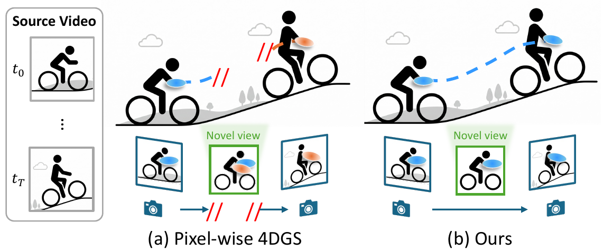
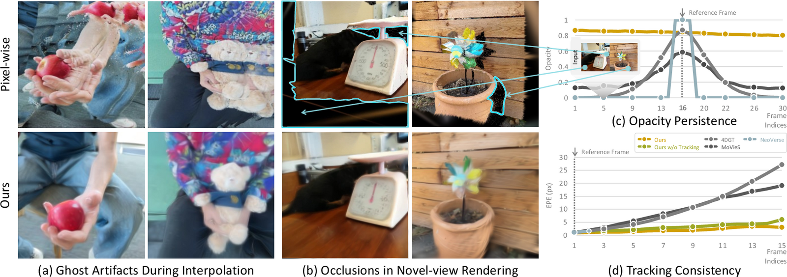
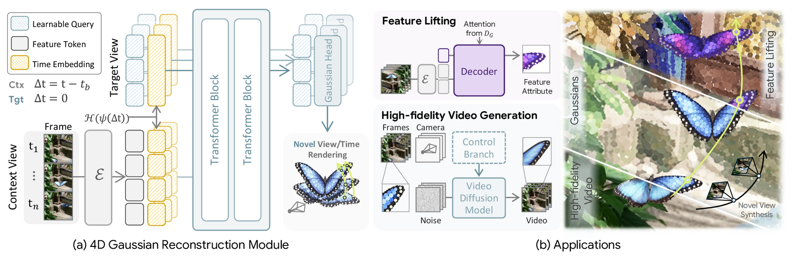

Dynamic scene reconstruction from monocular video remains a fundamental challenge in computer vision. Existing feed-forward methods predict per-pixel 3D Gaussians for each frame, leading to duplicated Gaussians and a view-dependent bias that hinder learning scene motion. T4GS instead decodes 3D Gaussians from a compact set of timestamp-conditioned learnable query tokens, each aggregating features across the full temporal context.
The resulting temporally coherent Gaussian representation serves as a motion-aware anchor for camera-controllable video generation and supports 4D feature lifting for point tracking and dynamic scene understanding. Across multiple dynamic benchmarks, T4GS achieves strong novel-view synthesis without input camera poses while using significantly fewer Gaussians and remaining robust to large temporal gaps.


Failures of pixel-wise feed-forward 4DGS. (a) Duplicated Gaussians from nearby input views cause ghost artifacts. (b, c) Opacity falls off sharply away from the observed timestamp, so regions visible only in temporally distant views remain black in (b). (d) Drift grows with frame distance, confirming that pixel-wise Gaussians cannot model global motion.
(a) Learnable queries aggregate encoder features from all context frames, with time embeddings of the relative timestamp, and are decoded into 3D Gaussians at the target time. (b) The globally consistent motion of T4GS enables 4D feature lifting, reusing the decoder attention, and camera-controllable video generation, where T4GS renders serve as a motion-aware anchor for a video diffusion model.

@article{kim2026learning,
title={Learning Temporally Aware Compact Gaussians for Feed-Forward 4D Reconstruction},
author={Kim, Mungyeom and Jeon, Minkyeong and An, Honggyu and Jung, Jaewoo and Ko, Hyuna and Han, Jisang and Yu, Hyeonseo and Shin, Donghwan and Hong, Sunghwan and Narihira, Takuya and others},
journal={arXiv preprint arXiv:2605.31595},
year={2026}
}